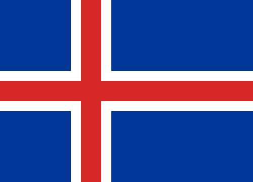
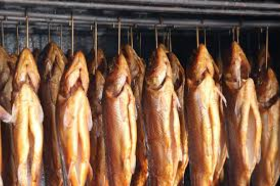

Iceland Information
Iceland, a Nordic island nation, is defined by its dramatic landscape with volcanoes, geysers, hot springs and lava fields. Massive glaciers are protected in Vatnajökull and Snæfellsjökull national parks. Most of the population lives in the capital, Reykjavik, which runs on geothermal power and is home to the National and Saga museums, tracing Iceland’s Viking history.
The Geography of Iceland
Iceland is a small nation that is Europe's westernmost country. Iceland is located between the Greenland Sea and the North Atlantic Ocean. It is northwest of the United Kingdom and is slightly smaller than the state of Kentucky. The land is plateau with mountain peaks, and ice fields, with a coastline marked by fjords, which are deep inlets carved by glaciers. Eleven percent of the country is covered in glacial ice and is surrounded by water.
Iceland is a volcanic island. The country has over 200 volcanoes and has one-third of the earth's total lava flow. They experience severe volcanic activity. The last eruption was in 2010, the Eyjafjallajokull volcano at an elevation of 5,466 feet erupted, blowing ash high into the atmosphere and disrupting European air traffic for weeks. Because Iceland is volcanic, almost all of their electricity and heating comes from hydroelectric power and geothermal water reserves.Iceland is also known for explosive geysers, geothermal spas, glacier-fed waterfalls like Gullfoss,and whale watching. Foxes were the only land mammals in Iceland when it was settled. Newcomers brought in domesticated animals and reindeer. Most of the wildlife is under conservation and protection. There are four national parks and more than 80 nature preserves. Vatnajökull, or Vatna Glacier, is an extensive ice field in southeastern Iceland, which covers 3,200 square miles with an average ice thickness of more than 3,000 feet.
Iceland Cuisine
Iceland's location plays a vital role in its cuisine. Their main source of ingredients is the sea. Iceland's cold Atlantic waters yield a bounty of fresh seafood, the most common local species are cod, haddock, catfish, herring, monkfish, halibut, trout, Arctic char, and salmon. Langoustine lobster from Hofn in the southeast, fresh mussels and shrimp from the north are also abundant. Wild-caught Atlantic salmon is firm and rich; usually served smoked or marinated with herbs. Cod is most often snacked on as dried, chewy ‘hardfisk’ but also cooked fresh and used in soups. Besides Iceland’s abundant sea source, they have a vast countryside. Sheep roam the open countryside all summer long, feeding on wild berries, herbs, and moss. This free-range flavor comes through in the succulent lamb meat, praised by chefs all over the world. Smoked lamb known as ‘hangikjot’ is enjoyed all year long, particularly at Christmas time when it is served with a white cream sauce, sugared potatoes, and green peas.
Iceland is also prominent for their dairy products. The most popular dairy product is ‘skyr’ which resembles a thick, creamy, Greek-style yogurt that is eaten for breakfast, as a snack and is used in desserts. Skyr is very high in calcium and protein but surprisingly low in calories. Varieties include plain, blueberry, melon, pear and vanilla. Ideally it is eaten plain with heavy cream stirred in and topped with seasonal berries. Iceland also produces a great variety of cheeses, over 100. Most are mild, rarely aged and similar to Gouda although the local favorites are camembert and blue cheese. Travelers with a sweet tooth will also love rich Icelandic ice cream, which is sometimes made and sold directly from farmhouses.
Icelands Economy
Iceland has a population of over 300,000 people. The country operates on the monetary value of the Krona. The Krona is equivalent to $0.0088 USD. Iceland’s Gross Domestic Product for the year of 2014 was 17 billion dollars. The sectors of this market came from 71.7% in services, 22.4% in industry, and 6.0% in agriculture. The country operates in a mixed economy, consisting of free trade and government intervention. The average household income for Iceland is $29,016, Iceland has an unemployment rate of 4.3%. Only 8% of the population falls below the poverty line of 152,533.92 Krona ($1,336.20 USD).